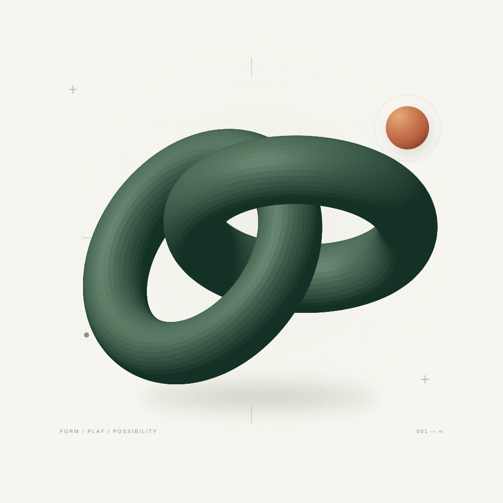

FIG. 01 — A WORK IN PROGRESS

A little curiosity goes a long way.保持好奇，持续创造。
01 / SELECTED WORK
一些认真做的小东西。
截图来自作品实际运行。音乐网页与游戏为非官方作品，第三方品牌、角色和素材的来源与使用说明见各项目仓库。
更多 GitHub 项目 ↗02 / A LITTLE ABOUT ME
在代码里探索，
在细节里表达。
YEMIN11238 · 持续构建中
你好，我是 YEMIN。
一个喜欢把想法做出来的人。
从可以漫游的 3D 音乐舞台，到融入桌面的玻璃面板，再到可以上手玩的横版游戏。这里记录着我对界面、交互与视觉体验的探索。
源代码和作品都放在 GitHub。欢迎逛逛，也欢迎带着问题、建议，或一个有趣的想法来交流。
JavaScriptTypeScriptThree.jsCanvas 2DElectron